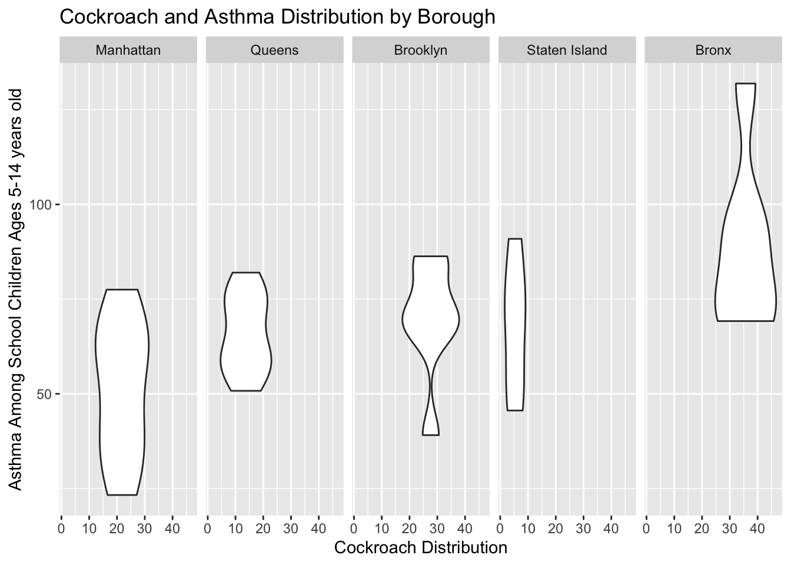
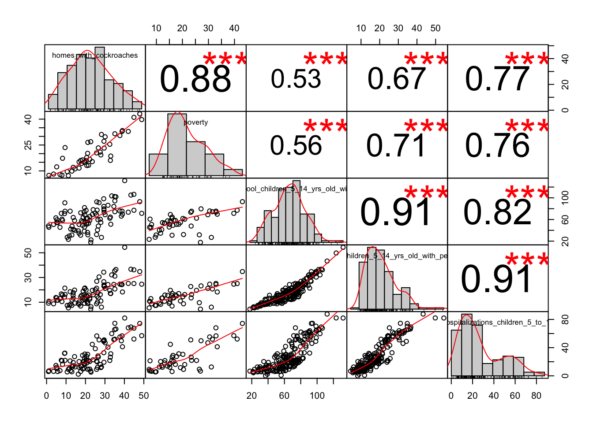

The dataset we used was compiled using the Environmental and Health Dataset from the NYC Health Department. We selected variables based on our preliminary hypothesis regarding asthma, poverty, neighborhood, cockroaches, and school children. These analyses are exploring the correlations and relationships. The correlation matrix displays associations between all of our predictors and outcome to indicate any multicollinearity. The crude analysis shows the crude relationship between cockroach presence and childhood asthma. Finally, the linear model demonstrates the model with all of our predictors against our outcome.

The correlation matrix displays the baseline relationship between each variable. All of the correlations are above 0.53 which indicates strong correlation. As we model build we will be aware of any multicollinearity.

Our crude relationship between childhood asthma and cockroaches in the home is demonstrated here. As the percent of homes with cockroaches increases, so does the number of public school children with asthma. This is not a perfectly linear correlation, but on average, it is a positive linear correlation.
| r.squared | adj.r.squared | sigma | statistic | p.value | df | logLik | AIC | BIC | deviance | df.residual |
|---|---|---|---|---|---|---|---|---|---|---|
| 0.5885523 | 0.408544 | 14.12675 | 3.269584 | 0.0235532 | 8 | -92.74262 | 203.4852 | 214.0877 | 3193.039 | 16 |